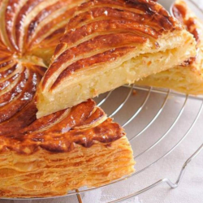

The classic French frangipane

Description
It is made by preparing a pastry cream and almond cream separately and then mixing the two. This will keep in the refrigerator for 3 to 4 days
Ingredients
- 1 cup skim milk
- ¼ cup white sugar
- 1 large egg
- 1 large egg yolk
- ¼ cup all-purpose flour
- 4 tablespoons unsalted butter, softened
- ½ cup white sugar
- ½ cup almond meal
- 1 teaspoon vanilla extract, or to taste
- ¼ teaspoon almond extract, or to taste
Steps
- Bring milk to a boil in a saucepan. Remove from the heat and set aside.
- Beat 1/4 cup sugar, egg, and egg yolk together until foamy. Add flour and slowly pour in hot milk, beating constantly until smooth and no lumps remain.
- Pour the mixture back into the saucepan and slowly bring to a simmer over low heat. Cook, beating constantly to avoid any lumps, until thickened, 3 to 5 minutes. Remove from the heat.
- Add butter and stir until melted. Add the remaining 1/2 cup sugar, almond meal, vanilla extract, and almond extract. Let cool, stirring every so often to prevent a skin from forming.
- Once cooled, use it right away or refrigerate until ready to use.